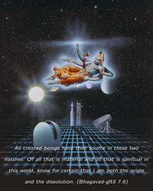
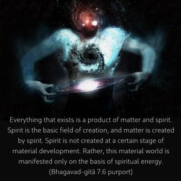
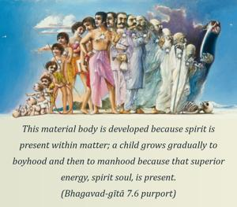
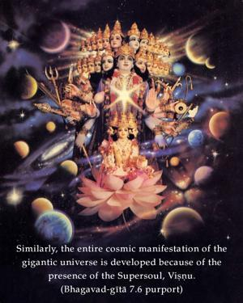

All created beings have their source in these two natures. Of all that is material and all that is spiritual in this world, know for certain that I am both the origin and the dissolution.




Everything that exists is a product of matter and spirit. Spirit is the basic field of creation, and matter is created by spirit. Spirit is not created at a certain stage of material development. Rather, this material world is manifested only on the basis of spiritual energy. This material body is developed because spirit is present within matter; a child grows gradually to boyhood and then to manhood because that superior energy, spirit soul, is present. Similarly, the entire cosmic manifestation of the gigantic universe is developed because of the presence of the Supersoul, Viṣṇu. Therefore spirit and matter, which combine to manifest this gigantic universal form, are originally two energies of the Lord, and consequently the Lord is the original cause of everything. A fragmental part and parcel of the Lord, namely the living entity, may be the cause of a big skyscraper, a big factory, or even a big city, but he cannot be the cause of a big universe. The cause of the big universe is the big soul, or the Supersoul. And Kṛṣṇa, the Supreme, is the cause of both the big and small souls. Therefore He is the original cause of all causes. This is confirmed in the Kaṭha Upaniṣad (2.2.13). Nityo nityānāṁ cetanaś cetanānām.